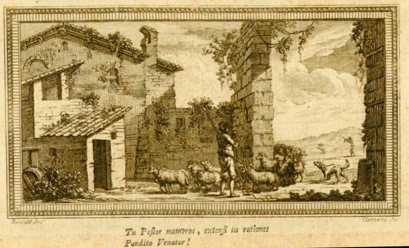

На обложке книги швейцарского математика Луи Бертрана ((Bertrand, Louis. Developpement nouveau de la partie elementaire des mathematiques (Geneve: Aux depens de l'Auteur, 1778)) находится следующее изображение:

Текст под рисунком гласит:
«Tu Pastor numeros, extensi tu rationes Pandito Venator»
Меня очень интересует, имеются ли какие-нибудь тексты, в которых встречается эта цитата и приводится ли где-нибудь ее устоявшийся перевод на другие языки. Приблизительный (очень приблизительный) смысл выражения: "Ты, пастырь, должен считать, ты, охотник, должен расширять границы счета".